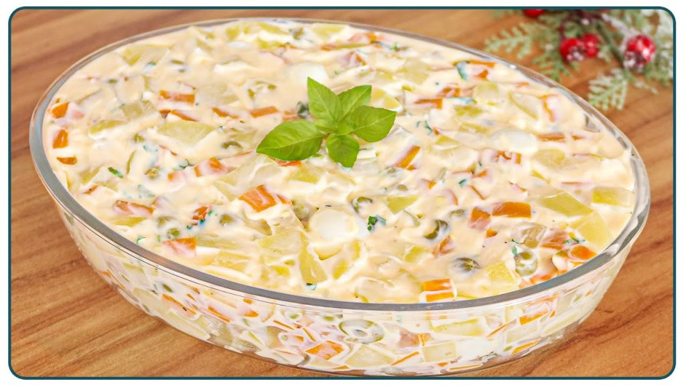

Salada de Maionese
Clássico acompanhamento brasileiro, refrescante e saboroso. Ideal para churrascos, almoços em família ou dias quentes.
Ingredientes
- 4 batatas médias
- 2 cenouras médias
- 1 xícara de ervilhas (congeladas ou em conserva)
- 1/2 xícara de milho (opcional)
- 1 maçã pequena (opcional, cortada em cubinhos)
- 1/2 xícara de maionese
- 2 colheres de sopa de creme de leite (opcional)
- Sal e pimenta a gosto
- Salsinha picada para decorar
Modo de Preparo
- Descasque e corte as batatas e as cenouras em cubinhos.
- Cozinhe as batatas e cenouras em água com sal até ficarem macias, mas firmes. Escorra e deixe esfriar.
- Se usar ervilhas congeladas, cozinhe por 2 minutos em água quente e escorra. Se forem em conserva, apenas escorra.
- Em uma tigela grande, misture as batatas, cenouras, ervilhas e milho (se usar).
- Adicione a maçã picada, se desejar um toque adocicado.
- Incorpore a maionese (e o creme de leite, se usar), misturando bem até envolver todos os ingredientes.
- Ajuste o sal e a pimenta. Leve à geladeira por pelo menos 30 minutos antes de servir.
- Decore com salsinha picada e sirva gelada.